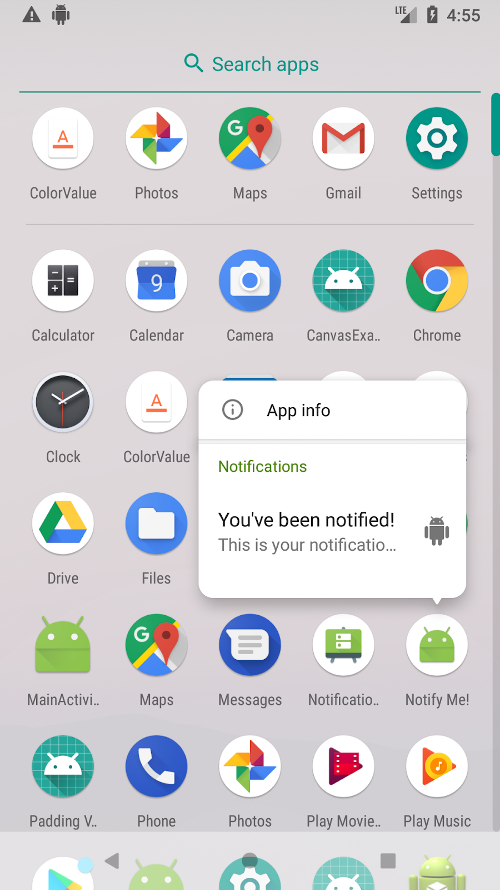
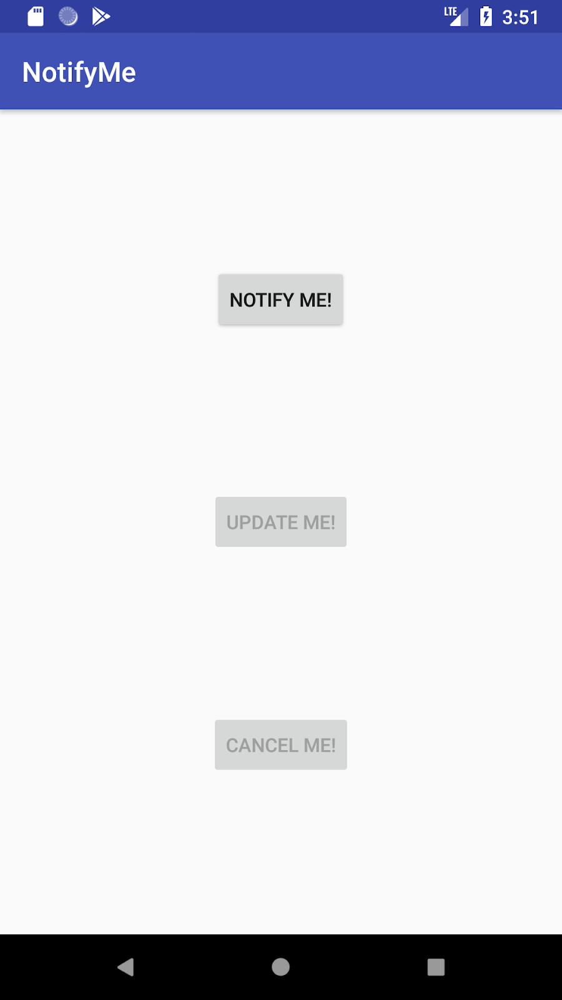
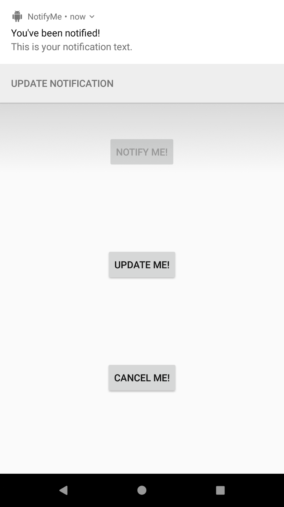
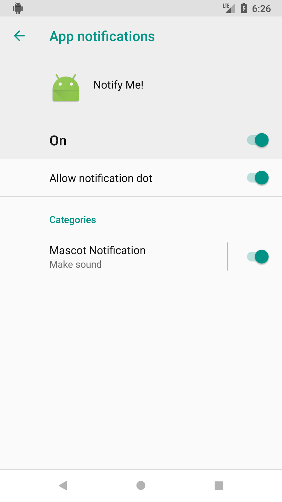
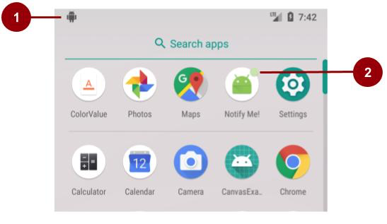
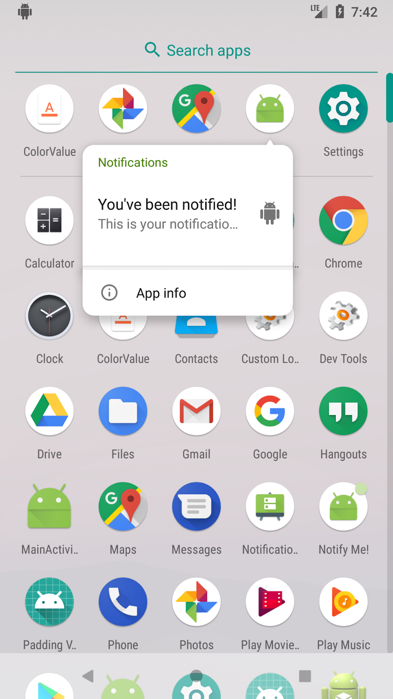
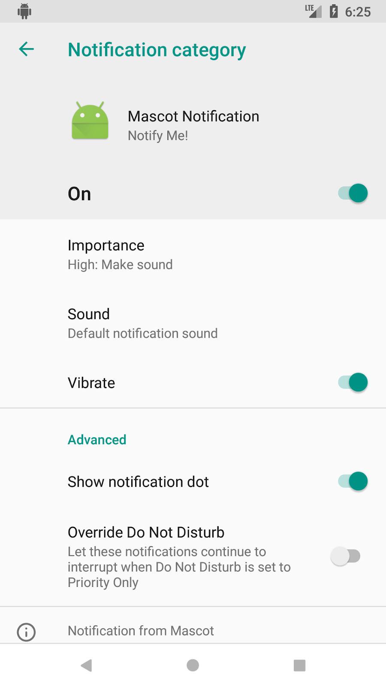
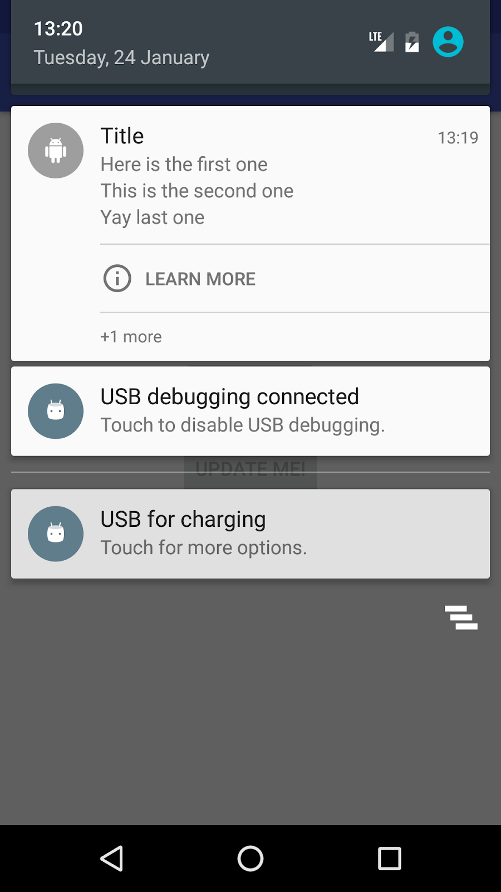

この実践的なコードラボはユニット 3: Android Developer Fundamentals (Version 2) コースのバックグラウンドでの作業の一部です。コードラボを順番に進めていくことで、このコースを最大限に活用することができます。
注：このコースでは、「codelab」と「practical」という用語を使い分けています。
序章
アプリがフォアグラウンドで実行されていなくても、アプリがユーザーに情報を表示したい場合があります。例えば、新しいコンテンツが利用可能になったことや、お気に入りのスポーツチームが試合でゴールを決めたことをユーザーに知らせたい場合があります。Androidの通知フレームワークは、アプリがフォアグラウンドで動作していなくても、アプリがユーザーに通知する方法を提供します。
通知とは、アプリの通常のUI以外でアプリがユーザーに表示するメッセージのことです。通知は、デバイスの通知領域（ステータスバー）にアイコンとして表示されます。通知の詳細を表示するには、ユーザーはステータスバーを下にスワイプするなどして通知ドロワを開きます。通知領域と通知ドロワーは、ユーザーがいつでも閲覧できるシステム制御領域です。
Android 8.0以降の端末では、アプリに新しい通知が表示されると、アプリのアイコンに自動的にバッジが表示されます。バッジは通知ドットとも呼ばれます）。ユーザーがアプリアイコンを長押しすると、下のスクリーンショットのように、アプリアイコンの上に通知が表示されます。

この実習では、ユーザーがアプリ内のボタンをタップしたときに通知をトリガーするアプリを作成します。ユーザーは通知を更新したり、キャンセルしたりすることができます。
すでに知っておくべきこと
できるようになるはずです。
onClick() メソッドを実装します。あなたが学ぶこと
あなたがすること
Notify Me! は、以下のスクリーンショットに示す 3 つのボタンを使って、ユーザーが通知をトリガー、更新、キャンセルすることができるアプリです。アプリを作成しながら、通知スタイル、アクション、優先順位を試してみましょう。
 |  |
1.1 プロジェクトの作成
activity_main.xmlレイアウトファイルで、デフォルトのTextViewを以下の属性を持つボタンに置き換えます。 <Button
android:id="@+id/notify"
android:layout_width="wrap_content"
android:layout_height="wrap_content"
android:text="Notify Me!"
app:layout_constraintBottom_toBottomOf="parent"
app:layout_constraintLeft_toLeftOf="parent"
app:layout_constraintRight_toRightOf="parent"
app:layout_constraintTop_toTopOf="parent" />private Button button_notify;sendNotification() メソッドのメソッドスタブを作成します。public void sendNotification() {}onCreate() メソッドで、Notify Me! ボタンを初期化し、そのための onClickListener を作成します。onClick メソッドから sendNotification() を呼び出します。button_notify = findViewById(R.id.notify);
button_notify.setOnClickListener(new View.OnClickListener() {
@Override
public void onClick(View view) {
sendNotification();
}
});
1.2 通知チャネルを作成する
Androidを搭載したデバイスの設定アプリでは、ユーザーは受信する通知を調整することができます。Android 8.0 (API レベル 26) からは、アプリの各通知をユーザーがカスタマイズ可能な通知チャネルに割り当てることができます。
Android 8.0（APIレベル26）以上を搭載したAndroid搭載端末では、アプリで作成した通知チャンネルは、端末の設定アプリの「アプリの通知」の下に「カテゴリ」として表示されます。
例えば、Android 8.0を実行しているデバイスの下のスクリーンショットでは、Notify Me！アプリには「マスコット通知」という1つの通知チャンネルがあります。

Android 8.0（APIレベル26）をターゲットとしたアプリでは、ユーザーに通知を表示するために、少なくとも1つの通知チャネルを実装する必要があります。ローエンドのデバイスで通知を表示するには、通知チャネルを実装する必要はありません。しかし、以下のことを常に行うのが良い習慣です。
targetSdkVersionを25以下に設定している場合、Android 8.0（APIレベル26）以上でアプリを実行した場合、Android 7.1（APIレベル25）以下の端末と同様の動作をします。
通知チャネルを作成します。
MainActivity で、通知チャネル ID の定数を作成します。すべての通知チャネルは、パッケージ内で一意の ID と関連付けられていなければなりません。後でこのチャンネルIDを使用して、通知を投稿します。private static final String PRIMARY_CHANNEL_ID = "primary_notification_channel";NotificationManager クラスを使用します。MainActivity.javaで、NotificationManagerオブジェクトを格納するためのメンバ変数を作成します。private NotificationManager mNotifyManager;
MainActivity.javaで、createNotificationChannel()メソッドを作成し、メソッド内にNotificationManagerをインスタンス化します。public void createNotificationChannel()
{
mNotifyManager = (NotificationManager)
getSystemService(NOTIFICATION_SERVICE);
}createNotificationChannel()メソッドで通知チャネルを作成します。通知チャネルはAPI 26以降でしか利用できないので、デバイスのAPIバージョンをチェックする条件を追加します。public void createNotificationChannel() {
mNotifyManager = (NotificationManager)
getSystemService(NOTIFICATION_SERVICE);
if (android.os.Build.VERSION.SDK_INT >=
android.os.Build.VERSION_CODES.O) {
// Create a NotificationChannel
}
}if 文の中で NotificationChannel オブジェクトを構築し、チャンネル ID として PRIMARY_CHANNEL_ID を使用します。IMPORTANCE_HIGH に設定します。(通知の重要度定数の完全なリストについては、NotificationManager のドキュメントを参照してください)。// Create a NotificationChannel
NotificationChannel notificationChannel = new NotificationChannel(PRIMARY_CHANNEL_ID,
"Mascot Notification", NotificationManager
.IMPORTANCE_HIGH);createNotificationChannel()では、if文の中で、notificationChannelオブジェクトの初期設定を行います。例えば、通知のライトの色を設定したり、バイブレーションを有効にしたり、デバイスの設定アプリに表示される説明を設定したりすることができます。また、通知のアラート音を構成することもできます。notificationChannel.enableLights(true);
notificationChannel.setLightColor(Color.RED);
notificationChannel.enableVibration(true);
notificationChannel.setDescription("Notification from Mascot");
mNotifyManager.createNotificationChannel(notificationChannel);1.3 最初の通知を構築する
通知はNotificationCompat.Builder クラスを使用して作成され、通知の内容と動作を設定することができます。通知には以下の要素を含めることができます。
setSmallIcon() メソッドを使用して設定します。これは setContentTitle() で設定したものです。setContentText() で設定した詳細テキスト (オプション)。必要な通知アイコンを作成します。
ic_android の名前を変更し、[次へ] と [完了] をクリックします。これにより、APIレベルごとに異なる解像度の描画可能なファイルが作成されます。通知を構築して表示するには
MainActivity.javaで、通知IDの定数を作成します。private static final int NOTIFICATION_ID = 0;MainActivity.javaで、onCreate()メソッドの最後に、createNotificationChannel()を呼び出します。このステップを怠ると、アプリがクラッシュします。MainActivity.java で、getNotificationBuilder() というヘルパー・メソッドを作成します。getNotificationCompat.Builder()は後で、NotificationCompat.Builderオブジェクトの中で使用します。Android Studioでは、return文の欠落についてのエラーが表示されますが、すぐに修正します。private NotificationCompat.Builder getNotificationBuilder(){}getNotificationBuilder() メソッドの中で、通知ビルダを作成してインスタンス化します。通知チャネル ID には PRIMARY_CHANNEL_ID を使用します。ポップアップ エラーが表示された場合は、NotificationCompat クラスが v4 サポート ライブラリからインポートされていることを確認してください。NotificationCompat.Builder notifyBuilder = new NotificationCompat.Builder(this, PRIMARY_CHANNEL_ID);getNotificationBuilder()メソッドの中で、以下のようにタイトル、テキスト、アイコンをビルダーに追加します。最後に Builder オブジェクトを返します。NotificationCompat.Builder notifyBuilder = new NotificationCompat.Builder(this, PRIMARY_CHANNELID)
.setContentTitle("You've been notified!")
.setContentText("This is your notification text.")
.setSmallIcon(R.drawable.ic_android);
return notifyBuilder;これで、通知を送信するsendNotification()メソッドが完成しました。
MainActivity.javaのsendNotification()メソッドの中で、getNotificationBuilder()を使用してビルダーオブジェクトを取得します。NotificationManager で notify() を呼び出します。NotificationCompat.Builder notifyBuilder = getNotificationBuilder();
mNotifyManager.notify(NOTIFICATION_ID, notifyBuilder.build());1.4 コンテンツのインテントを追加して通知を解除する
通知のためのコンテンツ・インテントは、このコースで使用したインテントと似ています。コンテンツ・インテントは、アクティビティを起動する明示的なインテント、アクションを実行する暗黙的なインテント、システム・イベントやカスタム・イベントをシステムに通知するブロードキャスト・インテントなどがあります。
通知に使用される Intent との大きな違いは、Intent を PendingIntent でラップしなければならないことです。PendingIntentを使うと、Androidの通知システムがコードに代わって割り当てられたアクションを実行することができます。
このステップでは、ユーザーが通知をタップしたときに、アプリがMainActivityを起動するコンテンツ インテントを送信するようにアプリを更新します（アプリが開いていてアクティブな場合は、通知をタップしても効果はありません）。(アプリが開いていてアクティブな場合、通知をタップしても何の影響もありません)。
MainActivity.java の getNotificationBuilder() の先頭に、MainActivity を起動するための明示的なインテント・メソッドを作成します。Intent notificationIntent = new Intent(this, MainActivity.class);getNotificationBuilder()の中で、notificationIntent宣言の後に、getActivity()メソッドを使用してPendingIntentを取得します。requestCode に通知 ID 定数を渡し、FLAG_UPDATE_CURRENT フラグを使用します。PendingIntentを使用して他のアプリと通信することで、将来のある時点で事前に定義されたコードを実行するようにそのアプリに指示します。これは、他のアプリがあなたのアプリに代わってアクションを実行することができるようなものです。
PendingIntent notificationPendingIntent = PendingIntent.getActivity(this,
NOTIFICATION_ID, notificationIntent, PendingIntent.FLAG_UPDATE_CURRENT);コンテンツ インテントを設定するには、NotificationCompat.Builder クラスの setContentIntent() メソッドを使用します。getNotificationBuilder() 内で、通知を構築しているコードで setContentIntent() を呼び出します。また、auto-cancel を true に設定します。.setContentIntent(notificationPendingIntent)
.setAutoCancel(true)自動キャンセルをtrueに設定すると、ユーザーがタップしたときに通知を閉じます。
MainActivityに戻ります。
上のスクリーンショットでは
ユーザーがアプリのアイコンをタッチ＆ホールドすると、アイコンと一緒に通知がポップアップで表示されます。

API 26以上のデバイスやエミュレータで動作している場合、作成した通知チャネルを表示する方法をご紹介します。

1.5 下位互換性のために通知に優先度とデフォルトを追加する
注：このタスクは、ほとんどのAndroid搭載デバイスであるAndroid 7.1以下を実行しているデバイスに必要です。Android 8.0 以降を実行しているデバイスでは、通知チャネルを使用して通知の優先度とデフォルトを追加しますが、下位デバイスの下位互換性とサポートを提供するためのベストプラクティスです。
ユーザーがアプリの「通知して！」ボタンをタップすると通知が発行されますが、ユーザーが目にするのは通知バーのアイコンだけです。ユーザーの注意を引くために、通知のデフォルトオプションを設定します。
優先度はPRIORITY_MIN (-2) からPRIORITY_MAX (2) までの整数値です。優先度の高い通知は、通知ドロワーで優先度の低い通知よりも上にソートされます。HIGH または MAX の優先度の高い通知は「ヘッドアップ」通知として配信され、ユーザーのアクティブな画面の上にドロップダウンします。すべての通知をMAX優先に設定するのは良い習慣ではないので、MAXは控えめに使いましょう。
getNotificationBuilder()メソッドの中で、通知ビルダーオブジェクトに以下の行を追加して、通知の優先度をhighに設定します。.setPriority(NotificationCompat.PRIORITY_HIGH)getNotificationBuilder() の内部で、次の行を notifyBuilder オブジェクトに追加します。
.setDefaults(NotificationCompat.DEFAULT_ALL).setDefaults(NotificationCompat.DEFAULT_ALL)
注意: 優先度の高い通知は、優先度とデフォルトの両方が設定されていない限り、アクティブ画面の前にドロップダウンしません。優先度の設定だけでは十分ではありません。
アプリが通知を発行した後、情報が変更されたり、無関係になった場合に通知を更新したり、キャンセルしたりできるのは便利です。
このタスクでは、通知を更新してキャンセルする方法を学びます。
2.1 更新ボタンとキャンセルボタンの追加
activity_maim.xmlレイアウトファイルで、Notify Me!ボタンのコピーを2つ作成します。デザインエディタで、新しいボタンを互いに重ならないように、親ボタンに拘束します。android:text属性を"Update Me!"と"Cancel Me!"に変更しました。android:id属性を変更します。<Button
android:id="@+id/notify"
android:layout_width="wrap_content"
android:layout_height="wrap_content"
android:text="Notify Me!"
app:layout_constraintBottom_toTopOf="@+id/update"
app:layout_constraintEnd_toEndOf="parent"
app:layout_constraintStart_toStartOf="parent"
app:layout_constraintTop_toTopOf="parent" />
<Button
android:id="@+id/update"
android:layout_width="wrap_content"
android:layout_height="wrap_content"
android:text="Update Me!"
app:layout_constraintBottom_toTopOf="@+id/cancel"
app:layout_constraintEnd_toEndOf="parent"
app:layout_constraintStart_toStartOf="parent"
app:layout_constraintTop_toBottomOf="@+id/notify" />
<Button
android:id="@+id/cancel"
android:layout_width="wrap_content"
android:layout_height="wrap_content"
android:text="Cancel Me!"
app:layout_constraintBottom_toBottomOf="parent"
app:layout_constraintEnd_toEndOf="parent"
app:layout_constraintStart_toStartOf="parent"
app:layout_constraintTop_toBottomOf="@+id/update" />.xmlに抽出します。MainActivity.javaファイルで以下の手順を実行します。
private Button button_cancel;
private Button button_update;onCreate() メソッドの最後に、ボタン変数を初期化し、その onClick リスナーを設定します。Android Studio がエラーをスローした場合は、プロジェクトを再構築します。button_update = findViewById(R.id.update);
button_update.setOnClickListener(new View.OnClickListener() {
@Override
public void onClick(View view) {
//Update the notification
}
});
button_cancel = findViewById(R.id.cancel);
button_cancel.setOnClickListener(new View.OnClickListener() {
@Override
public void onClick(View view) {
//Cancel the notification
}
});voidを返します。public void updateNotification() {}
public void cancelNotification() {}更新ボタンのonCreate()メソッドでは、更新ボタンのonClickメソッドでupdateNotification()を呼び出します。キャンセルボタンのonClickメソッドでは、cancelNotification()を呼び出します。2.2 キャンセル・更新通知方法の実装
通知をキャンセルするには、通知 ID を渡して NotificationManager で cancel() を呼び出します。
MainActivity.javaのcancelNotification()メソッドの中に、以下の行を追加します。mNotifyManager.cancel(NOTIFICATION_ID);通知の更新は、通知のキャンセルよりも複雑です。Androidの通知には、情報を凝縮できるスタイルが付属しています。例えば、Gmailアプリは、ユーザーが複数の未読メッセージを持っている場合、InboxStyle通知を使用して、情報を1つの通知に凝縮します。
この例では、通知に画像を含めることができるBigPictureStyle を使用するように通知を更新しています。
mascot_1 に変更してください。自分の画像を使用する場合は、縦横比が2:1、横幅が450dp以下であることを確認してください。mascot_1の画像をres/drawableフォルダに入れます。MainActivity.javaのupdateNotification()メソッドの中で、ドローアブルをビットマップに変換します。 Bitmap androidImage = BitmapFactory
.decodeResource(getResources(),R.drawable.mascot_1);updateNotification() の内部で、getNotificationBuilder() メソッドを使用して NotificationCompat.Builder オブジェクトを取得します。NotificationCompat.Builder notifyBuilder = getNotificationBuilder();updateNotification()の中で、notifyBuilder宣言の後に、通知のスタイルを変更し、画像とタイトルを設定します。notifyBuilder.setStyle(new NotificationCompat.BigPictureStyle()
.bigPicture(androidImage)
.setBigContentTitle("Notification Updated!"));注: BigPictureStyle
は NotificationCompat.Style のサブクラスで、通知のための代替レイアウトを提供します。他の定義されたサブクラスについては、ドキュメントを参照してください。
updateNotification()の中で、通知スタイルを設定した後、通知をビルドし、NotificationManager上でnotify()を呼び出します。先ほどと同じ通知IDを渡します。mNotifyManager.notify(NOTIFICATION_ID, notifyBuilder.build());2.3 ボタンの状態を切り替える
このアプリでは、通知の状態がアクティビティ内で追跡されないため、ユーザーは混乱してしまうことがあります。例えば、通知が表示されていないときに「キャンセル！」をタップしてしまうことがあります。
通知の状態に応じてボタンを有効にしたり、無効にしたりすることで修正することができます。
すべてのボタンのボタンの状態を切り替えるには、MainActivity.javaで以下の手順を実行します。
setNotificationButtonState() というユーティリティ・メソッドを追加しました。void setNotificationButtonState(Boolean isNotifyEnabled,
Boolean isUpdateEnabled,
Boolean isCancelEnabled) {
button_notify.setEnabled(isNotifyEnabled);
button_update.setEnabled(isUpdateEnabled);
button_cancel.setEnabled(isCancelEnabled);
}setNotificationButtonState() の呼び出しを追加します。onCreate():
setNotificationButtonState(true, false, false);sendNotification():
setNotificationButtonState(false, true, true);updateNotification():
setNotificationButtonState(false, false, true);cancelNotification():
setNotificationButtonState(true, false, false);時には、通知はユーザーからのインタラクションを必要とします。例えば、ユーザーはアラームをスヌーズしたり、テキストメッセージに返信したりするかもしれません。このようなタイプの通知が発生した場合、ユーザーはイベントに応答するために通知をタップするかもしれません。その後、Androidは関連するアクティビティをアプリにロードします。
アプリを開かないようにするために、通知フレームワークでは、通知自体に直接通知アクションボタンを埋め込むことができます。
アクションボタンには以下のコンポーネントが必要です。
PendingIntent。このタスクでは、通知にアクションボタンを追加します。アクションボタンを使用すると、ユーザーはアプリを開くことなく、通知内から通知を更新することができます。この通知の更新アクションは、アプリがフォアグラウンドまたはバックグラウンドで実行されているかどうかに関わらず動作します。
3.1 updateNotification()を呼び出すブロードキャスト受信機の実装
このステップでは、ユーザが通知内の更新通知アクション ボタンをタップしたときに updateNotification() メソッドを呼び出すブロードキャスト レシーバを実装します。
MainActivity.javaで、BroadcastReceiverのサブクラスをインナークラスとして追加します。onReceive()メソッドをオーバーライドします。空のコンストラクタを含めることを忘れないでください。public class NotificationReceiver extends BroadcastReceiver {
public NotificationReceiver() {
}
@Override
public void onReceive(Context context, Intent intent) {
// Update the notification
}
}
NotificationReceiver の onReceive() メソッドで updateNotification() を呼び出します。MainActivity.javaで、ブロードキャストの更新通知アクションを表す一意の定数メンバ変数を作成します。変数の一意性を確保するために、変数の値の前にアプリのパッケージ名を付けてください。 private static final String ACTION_UPDATE_NOTIFICATION =
"com.example.android.notifyme.ACTION_UPDATE_NOTIFICATION";
MainActivity.javaで、レシーバーのメンバ変数を作成し、デフォルトのコンストラクタを使用して初期化します。private NotificationReceiver mReceiver = new NotificationReceiver();ACTION_UPDATE_NOTIFICATION インテントを受信するには、onCreate() メソッドでブロードキャスト受信機を登録する。registerReceiver(mReceiver,new IntentFilter(ACTION_UPDATE_NOTIFICATION));onDestroy() メソッドをオーバーライドします。@Override
protected void onDestroy() {
unregisterReceiver(mReceiver);
super.onDestroy();
}注: 通知によって送信されるブロードキャストは、自分のアプリにのみ関係しており、LocalBroadcastManagerで配信されるべきであるかのように見えるかもしれません。しかし、PendingIntent
を使用すると、通知の配信の責任がAndroidフレームワークに委譲されます。Android ランタイムがブロードキャストを処理するため、LocalBroadcastManager
を使用することはできません。
3.2 更新アクションのアイコンを作成する
更新アクション ボタンのアイコンを作成します。
ic_update に名前を付けます。Android 7.0から、通知にアイコンが表示されなくなりました。その代わり、ラベル自体にはより多くのスペースが与えられるようになりました。とはいえ、通知アクションのアイコンは必須で、古いバージョンのAndroidやAndroid Wearなどの端末では引き続き使用されています。
3.3 通知に更新アクションを追加する
MainActivity.javaのsendNotification()メソッド内で、以下の手順を実装します。
メソッドの最初に、カスタム更新アクション ACTION_UPDATE_NOTIFICATION を使用して Intent を作成します。getBroadcast() を使用して PendingIntent を取得します。このペンディングインテントを送信して一度だけ使用するようにするには、FLAG_ONE_SHOTを設定します。Intent updateIntent = new Intent(ACTION_UPDATE_NOTIFICATION);
PendingIntent updatePendingIntent = PendingIntent.getBroadcast
(this, NOTIFICATION_ID, updateIntent, PendingIntent.FLAG_ONE_SHOT);addAction() メソッドを使用して、notifyBuilder 定義の後にアクションを NotificationCompat.Builder オブジェクトに追加します。アイコン、ラベル テキスト、および PendingIntent を渡します。notifyBuilder.addAction(R.drawable.ic_update, "Update Notification", updatePendingIntent);アプリを開かずに通知を更新できるようになりました
Android Studioプロジェクト。NotifyMe
注: コーディングの課題はすべて任意であり、後のレッスンの前提条件ではありません。
ボタンの有効化と無効化は、ユーザーがアプリの現在の状態でサポートされていないアクションを実行しないようにするための一般的な方法です。たとえば、ネットワークが利用できない場合にSyncボタンを無効にすることができます。
NotifyMeアプリでは、ボタンの状態がアプリの状態と一致しない場合があります。この場合、アプリは通知がキャンセルされたことを知る方法がなく、ボタンの状態を変更する必要があります。
別の保留中のインテントを作成して、ユーザーが通知を解除したことをアプリに知らせ、それに応じてボタンの状態を切り替えます。
ヒント: ユーザーが通知を解除した場合に Intent を配信するメソッドについてはNotificationCompat.Builder クラスをチェックアウトしてください。
通知とは、アプリの通常のUI以外でユーザーに表示できるメッセージのことです。
通知のUIとアクションを指定するには、NotificationCompat.Builderを使用します。通知を作成するには、NotificationCompat.Builder.build()を使用します。NotificationManager.notify() を使用して通知オブジェクトを Android ランタイムシステムに渡します。setSmallIcon(), required)、タイトル (setContentTitle())、詳細テキスト (setContentText()) など、いくつかのコンポーネントを持たせることができます。NotificationCompat.Builder を参照してください。ガイド
参考にしてください。
このセクションでは、インストラクターが主導するコースの一部として、このコードラボを通して作業する学生のための可能な宿題をリストアップします。以下のことをするかどうかはインストラクター次第です。
講師は、彼らが望むように少しまたは多くのようにこれらの提案を使用することができますし、彼らが適切であると感じる他の宿題を割り当てるために自由に感じるはずです。
もしあなた自身でこのコードラボに取り組んでいるのであれば、これらの宿題を使ってあなたの知識をテストしてみてはいかがでしょうか。
アプリを構築して実行する
NotifyMe アプリのソリューション コードを開きます。アプリ内の更新された通知を変更し、BigPictureStyleではなくInboxStyleの拡張レイアウトを使用するようにします。各行と要約テキストに偽の文字列データを使用します。

注意：デバイスのAPIレベルによっては、通知が少し違って見える場合があります。
以下の質問に答えてください。
質問1
通知チャネルに当てはまるものをすべて選択します。
質問2
通知ドロワーやデバイスのステータスバーに通知を表示するには、どのAPIを使用しますか？
Notification.notify()NotificationManager.notify()NotificationCompact.notify()NotificationCompat.Builder.notify()質問3
通知アクションを追加するときに必要ないコンポーネントはどれですか？
PendingIntent。質問4
通知にアクションボタンを追加するには、どのAPIを使用しますか？
NotificationCompat.addActionButton()NotificationCompat.Builder.addAction()Notification.Builder.addActionButton()NotificationManager.addAction()質問5
毎日ユーザーのデバイスに作品をダウンロードするアプリを作成したとします。その日の画像が利用可能になると、アプリはユーザーに通知を表示し、ユーザーは画像をダウンロードするか、ダウンロードをスキップすることができます。画像をダウンロードするサービスを開始するには、どのPendingIntentメソッドを使用しますか？
Activity.startService()PendingIntent.getBroadcast()PendingIntent.getActivity()PendingIntent.getService()アプリを提出して採点を受ける
学年別ガイダンス
アプリが以下の機能を持っているかどうかを確認しましょう。
InboxStyleの通知になります。アプリは後方互換性のために NotificationCompat.InboxStyle クラスを使用しています。Android Developer Fundamentals (V2)コースの次の実践的なコードラボを見つけるには、Codelabs for Android Developer Fundamentals (V2)を参照してください。
概念章、アプリ、スライドへのリンクを含むコースの概要については、Android Developer Fundamentals (Version 2)を参照してください。